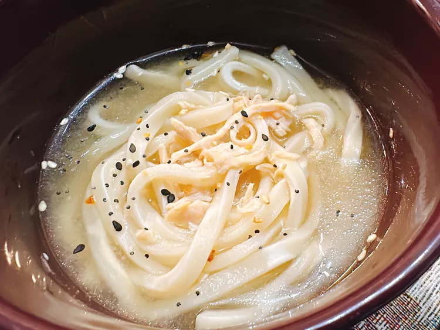

Chicken Soup Recipe
Home page

This miso chicken noodle soup, with thick, chewy udon noodles and a savory
miso broth, is a tasty—and very easy—remake of traditional
chicken noodle soup.
This recipe is easy to create and requires only a few ingredients that are less
common such as udon noodles, miso paste and bagel seasoning
ingredients:
- 1 1/1 cups of water
- 8.5oz frozen udon noodles
- 4oz rotisserie chicken, shredded
- 1 tablespoon white miso paste
- everything bagel seasoning,to taste
Directions
-
In saucepan over medium high heat, heat water to boiling. Add udon noodles.
cook until noodles are softened, 4 to 5 minutes.
-
Add chicken. Turn heat to low. REmove 2 to 3 ts water, and stir miso paste into water
until smooth.
-
ladle soup into bowls and garnish with everything bagel seasoning